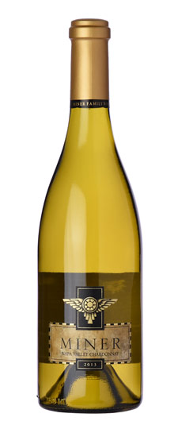

Lisa's Top Five Chardonnays
| Wine | Ranking | Tasting Notes | ||
|---|---|---|---|---|
|
Gundlach Bundschu | 1 | A Sonoma County favorite, oaky and delicious | |
|  | Miner Family | 2 | Hails from Napa, but surprisingly lacking in pretention | |
 |
Sonoma Cutrer | 3 | Common choice when looking for classic oak and toast | |
| J Vineyards | 4 | A hidden gem from the Russian River Valley | ||
| Rombauer | 5 | Ripe and bright, with a hint of oak |